Challenge
Ice makers haven’t changed in decades; making a new batch still takes 90 minutes. Mabe asked our ME310 team to rethink the entire cooling ritual and eliminate the waiting gap.
We investigated the most common use case: cooling beverages without dilution. The question became: why use ice at all?
- Focused on cooling speed, taste preservation, and ritual simplicity.
- Explored phase-change alternatives to traditional ice cubes.
Needfinding
Research showed ice is used primarily for beverages, but consumers dislike dilution and the lag time for new ice. We prototyped experiential alternatives to validate the core need: rapid chilling without compromise.
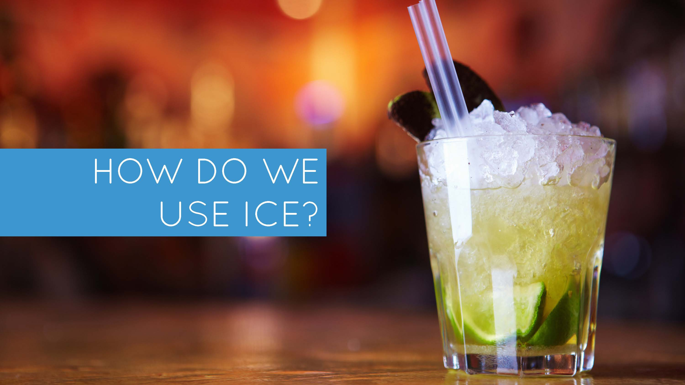
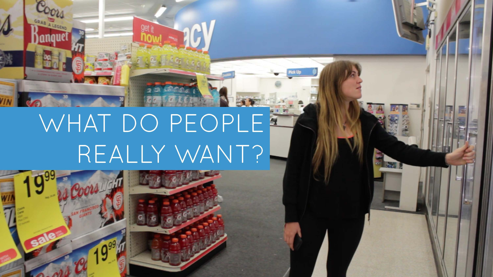
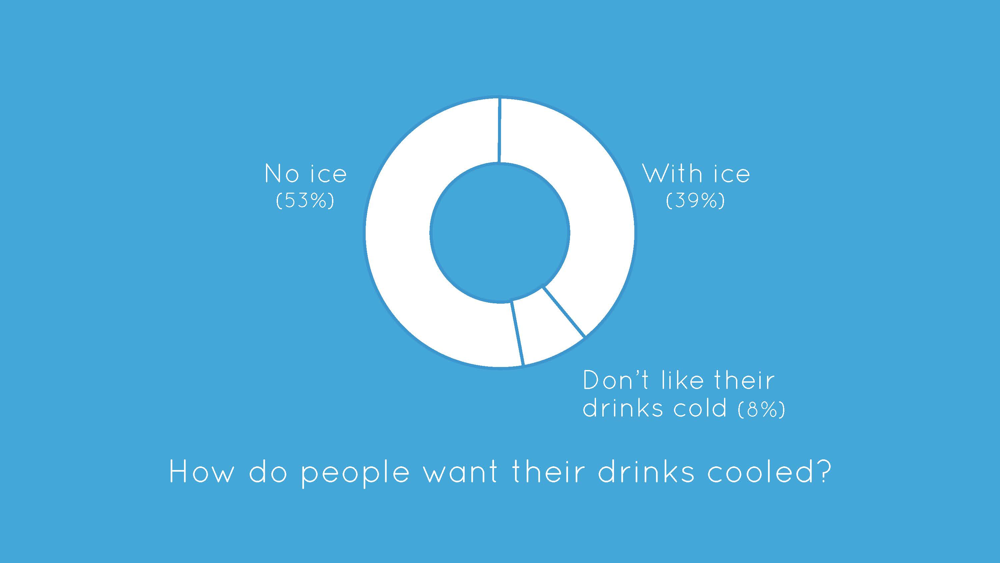
Critical experience prototypes
We ran “looks-like” and “Wizard of Oz” experiments to capture the emotional response to rapid cooling. Feedback shaped the final roller geometry and interface behavior.
Final design
Polar Roller chills cans and bottles by spinning them against a liquid-cooled surface. The same system can freeze water using a cylindrical container, unlocking both beverage cooling and ice production in one appliance.

Cooling cycle demo
Interface & testing
A capacitive PMMA interface powered by Arduino orchestrated the roller motors and cooling cycle. We tested the system with 300+ people during the final Stanford presentation.
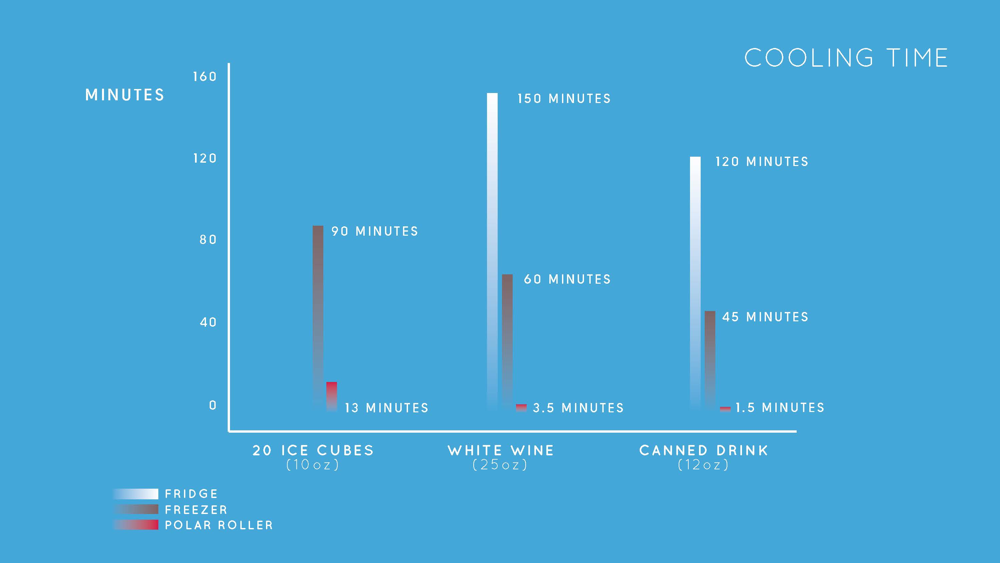
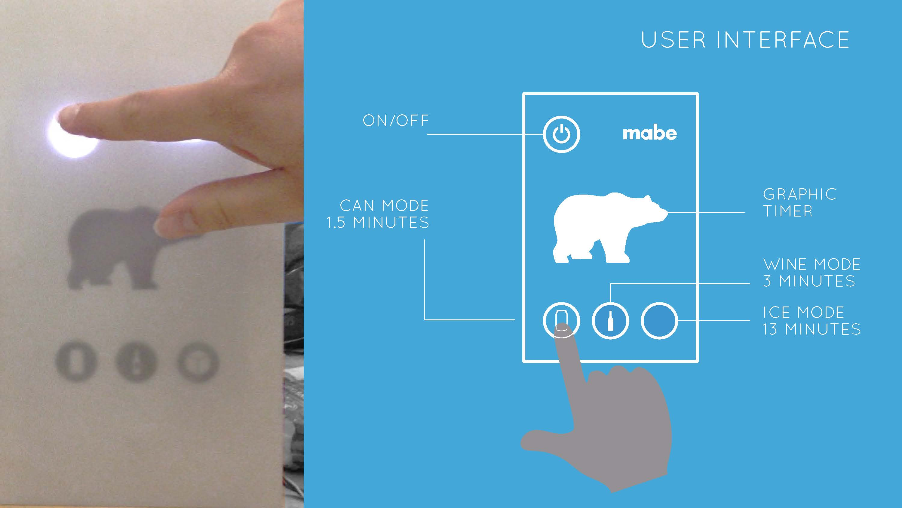
ME310 Expo 2014
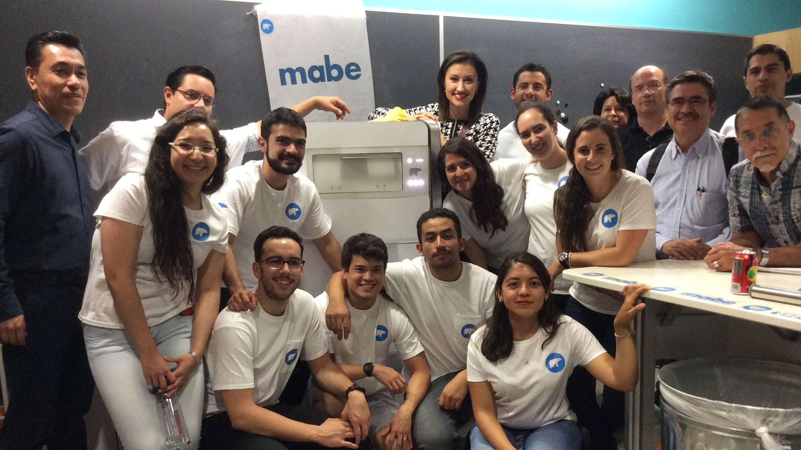
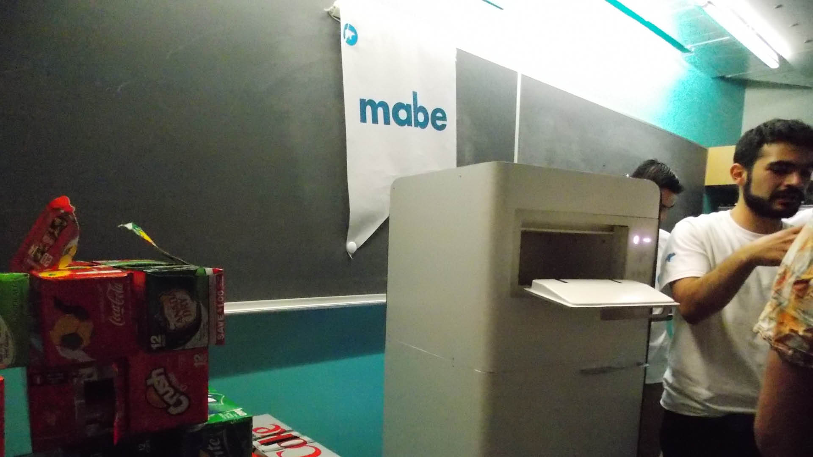
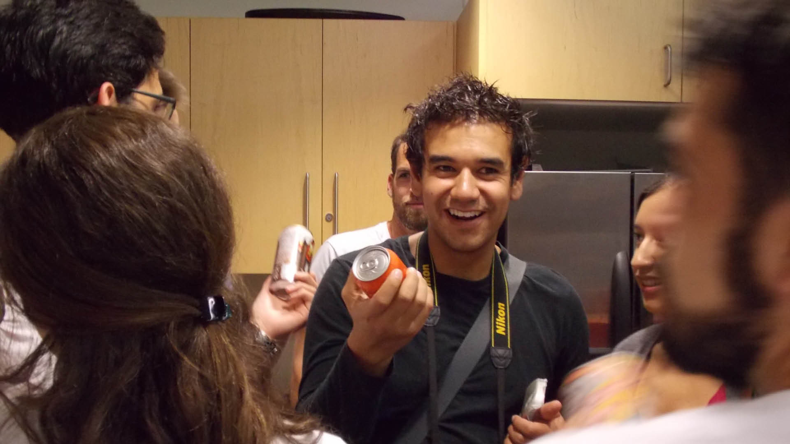
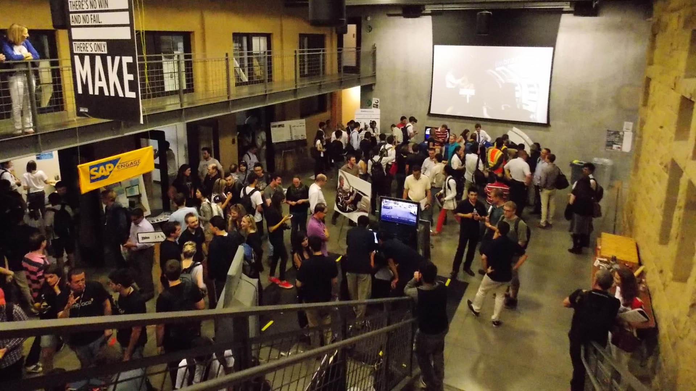
Construction
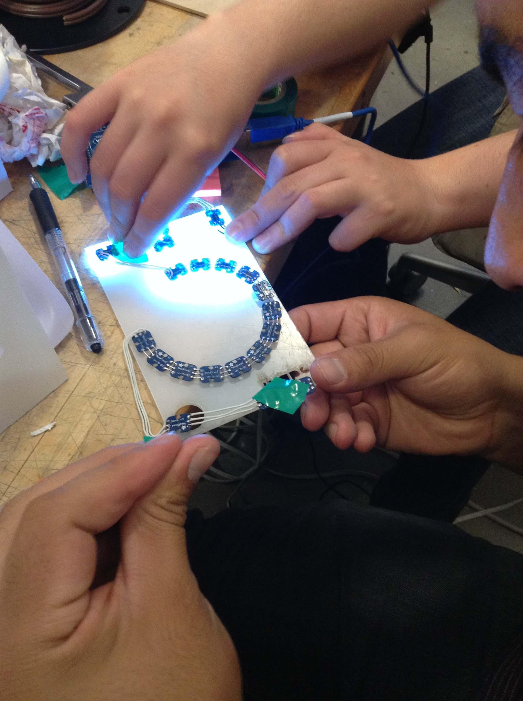
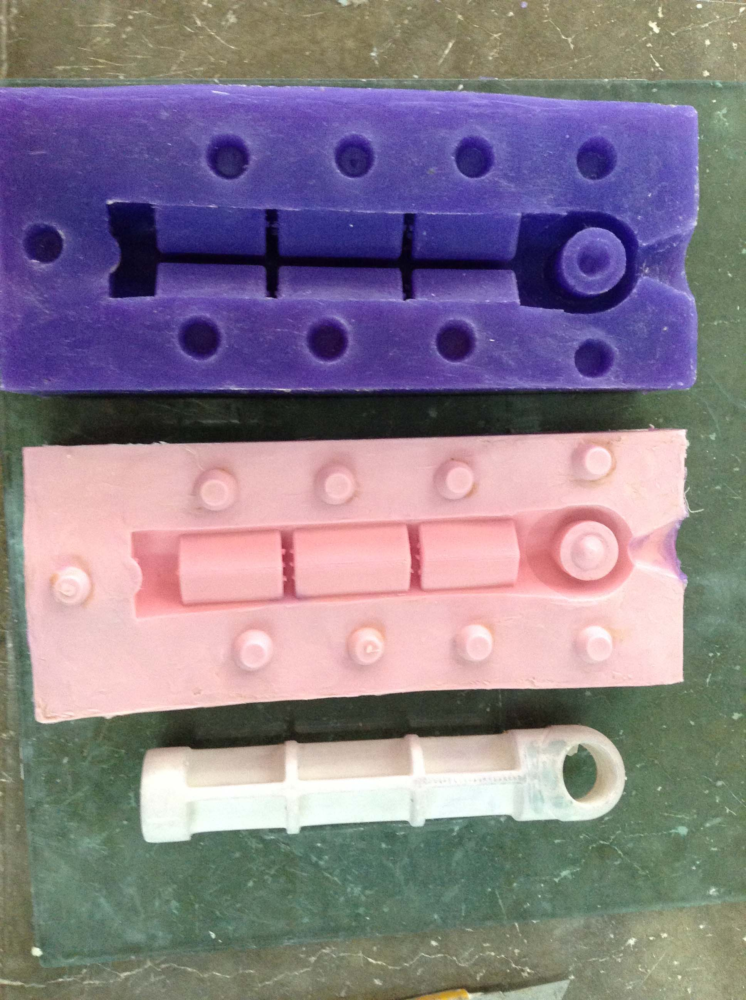
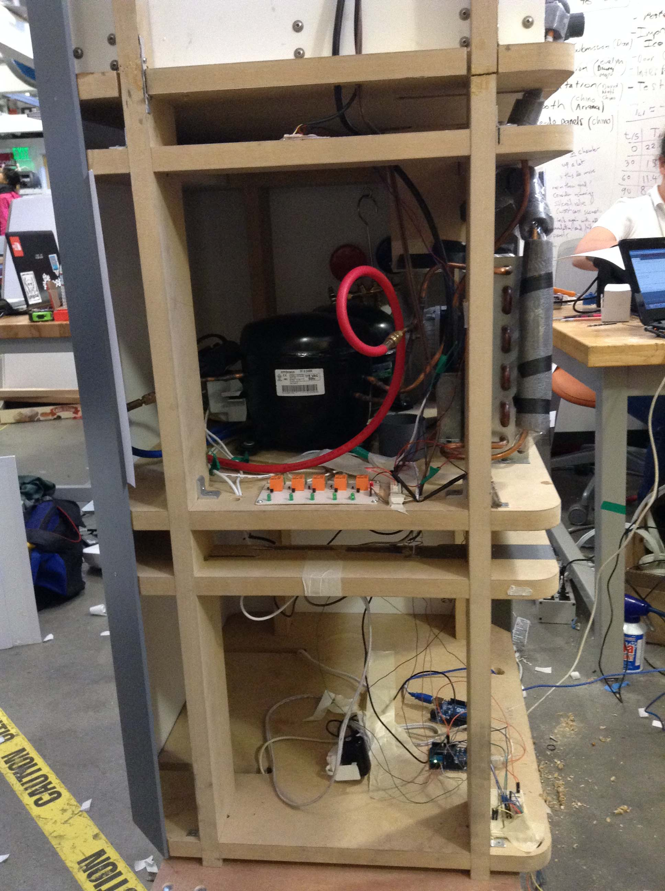
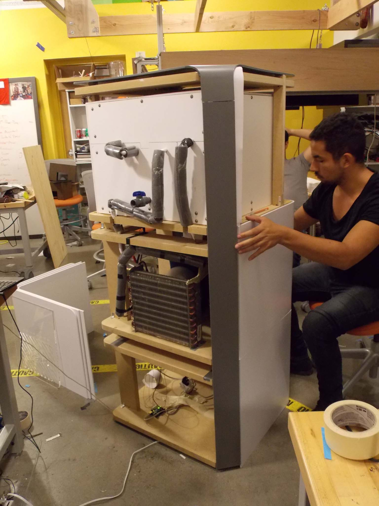